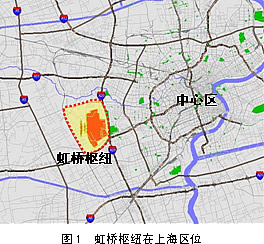
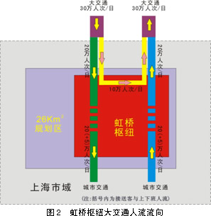
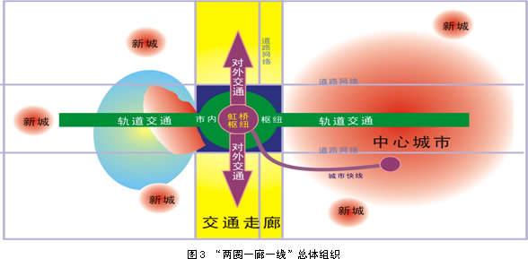
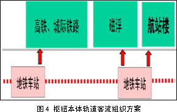
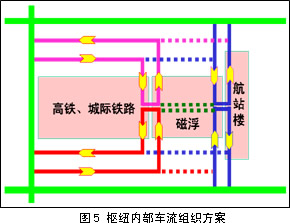
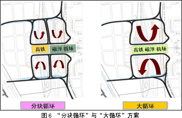
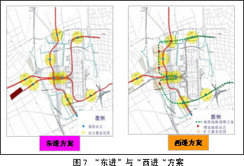

城市开发建设项目前期的交通功能规划研究--以虹桥交通枢纽为例 ( 2007年11月20日 )
【摘要】国家关于“十一五”建设集约型和节约型社会的目标，要求城市建设中需要更为科学的规划与决策。传统的城市开发建设过程，往往仅根据各类城市规划确定的设施布局，直接进行相应的可行性研究和工程设计，忽略了相应的交通功能规划，从而导致了最终城市开发建设与城市发展的不适应。特别是在与交通系统密切相关的项目，如城市交通枢纽、大型客流集散中心等项目开发建设时问题更为突出。本文阐述了交通功能规划的实质与主要内容，以及城市开发建设项目前期进行交通功能规划的重要性。本文还以上海虹桥综合交通枢纽建设为实例，具体介绍了交通功能规划的过程。<BR> 【关键词】城市 交通 功能规划
随着现代城市交通系统的日益扩大，一些大型交通系统的规划建设变得越来越综合也越来越复杂，传统的交通规划、设计、建设过程，经常难以适应新的发展需要。对于多种交通方式高度集成的大型综合交通枢纽这种不足显得尤为突出，需要通过城市交通功能规划来指导各种交通系统的规划设计。<BR>城市交通功能规划围绕如何实现新建交通设施功能，重点进行以客流、物流为主的交通流组织规划，用于指导交通设施平面、立面立体布局规划和道路、轨道等各专项交通规划，确保一个客（货）流快捷、舒适、安全、高效的城市交通系统形成。</P>
一、交通功能规划概念、内容与主要特征
1．交通功能规划概念<BR> 城市开发建设项目的交通功能规划，就是对该开发建设项目所承担的交通系统功能的规划，是集交通系统的功能定位，功能布局，功能实现于一体的规划。<BR>交通功能规划有点类似于开发建设区域的综合交通规划，但并不等同于综合交通规划。相应而言，局部区域综合交通规划更多强调的是交通系统功能定位和设施布局的规划，而交通功能规划还考虑了更深层次的交通流组织规划、系统功能如何实现和相应的交通影响评估，因而交通功能规划可以认为是深化的综合交通规划；交通功能规划也类似于交通设计，与交通设计相比，交通功能规划对开发建设项目的宏观方面的功能定位和设施布局的研究更深入，但微观的设计相对简单，因此也可以认为交通功能规划是交通设计的前期基础。<BR> 2．交通功能规划主要内容<BR> 根据交通功能规划的概念，交通功能规划通常需要完成以下内容。<BR>（一）客货运输量预测与交通系统功能定位分析<BR> 首先需对该项目进行交通需求预测，包括客货需求总量、空间分布及方式结构的预测，这是交通功能规划也是其他交通规划的基础。在客货运输量预测的基础上，对该项目涉及的交通系统所要实现的功能定位进行综合分析，确定该项目达到预期目标时，交通系统应有的交通功能定位。<BR>（二）交通系统交通流总体组织规划
在确定的交通功能定位基础上，进一步确定各种交通方式的合理结构，在明确各种交通方式运输量及相互间转乘量的前提下，构筑交通系统外部－外部交通流、内部－外部交通流以及内部－内部交通流的总体组织规划，初步确定交通功能布局。<BR>（三）道路、轨道、停放车等各专项系统交通流组织规划研究
根据各种交通方式运输量及交通流总体组织方案，进一步确定道路、轨道、停放车、公交等各专项交通系统交通流组织原则及方案，提出交通系统功能设施布局方案。<BR>（四）交通功能规划目标体系<BR> 交通功能规划目标体系确定了开发建设项目的交通系统在未来各方面所应具有的服务水准，是各专项交通系统规划设计方案所需要评价对比的主要方面，同时对交通功能预期目标实现提供了评价依据。<BR>（五）其他诸如土地开发、运营管理等对交通功能的影响研究
交通系统功能的发挥往往受周边土地开发和交通系统运营管理的影响。对开发建设项目周边土地开发和未来交通运营管理进行适当分析研究，有助于对未来各种影响因素进行界定，从而对土地开发和运营管理等相关方面提出要求。</P>
3． 交通功能规划与相关规划关系
（一）交通功能规划处于地区总体规划、各专项交通规划之间的规划过程
我国城市开发建设项目比较重视规划，但大多为城市规划层面的，规划一般包括概念规划、地区总体规划、专项交通规划、控制性详细规划等过程。有时候在介于总体规划与控制详细规划之间还有结构规划。但在这些规划中，往往缺少总体确定交通系统功能定位、布局和实现的交通功能规划，从而造成在进行专项交通规划和项目可行性研究的盲目性，最终形成的交通系统设施布局不合理，协调性差，运输效率低下，难以达到该项目的交通发展要求和项目最终达到的预期目标。这些问题尤其突出反映在哪那些开发建设与交通密切关系的项目或者就是交通建设项目。<BR>交通功能规划，某种意义上，是一个处于地区总体规划与各专项规划之间综合交通规划，它既反映了地区总体规划对交通设施的目标要求，又指导了下一层面的各专项交通规划、交通设计、工程可行性研究等方面规划和研究。<BR>（二）从交通系统角度，交通功能规划更具指导性和可行性<BR> 正是因为要对后续规划有效指导，交通功能规划比地区总体规划等城市用地规划等更多考虑如何组织交通流、如何实现交通功能，因而其对后续专项规划更具指导性。<BR>为了确保能够真正发挥指导作用，交通功能规划需要考虑工程、经济实现的可行。一方面需要形成一个具有较高水准的交通流组织规划，另一方面需要避免要求过高、无法实现的交通功能规划，以便确保交通功能规划成果在各专项交通规划设计中得到尽可能贯彻。<BR>（三）交通功能规划比各专项交通规划更具全面性和包容性<BR> 与各专项交通规划相比，交通功能规划更全面、更包容。交通功能规划要统筹考虑各种交通流组织需求，才能发挥全面指导作用。交通功能规划也要注意避免过度深入专项交通规划，将各专项交通系统规划限制过多，导致各专项交通系统方案缺乏弹性与可变性，
4．交通功能规划过程的主要特征
交通功能规划往往不可能一蹴而就，是一个动态、循环、互动的过程，它能在项目规划、设计、运营管理的各阶段都发挥相应的作用。<BR>（一）交通功能规划的成果需要落实到各专项交通系统规划、设计、工程可行性研究甚至运营管理过程中。<BR>（二）交通功能规划需要通过后续规划提供的反馈信息，不断提高交通流组织水平。在各专项交通系统规划设计过程中所反映出来的各种技术、经济、体制等各方面无法克服的障碍，都有可能需要交通功能规划对交通流组织进行适当调整。<BR>（三）交通功能规划也促使对开发建设项目的用地规划进行反思，促进对交通项目的定位、功能进一步深化研究。</P>
二、交通功能规划在上海虹桥综合交通枢纽规划中的实践<BR> 作为国家“十一五”期间规划建设的重大工程，虹桥综合交通枢纽是一个将虹桥机场、京沪高速铁路、沪宁城际铁路、沪杭磁浮、高速巴士等各种上海大交通主枢纽综合在一起的、以服务上海市为主兼具较强能力服务长三角的、世界级巨型综合交通大枢纽。</P>
1． 虹桥综合枢纽的交通功能规划背景<BR>

虹桥综合枢纽的规划、建设是一项非常复杂、具有相当挑战的工作。上海市在完成了虹桥综合枢纽地区结构规划（类似地区总体规划）、国际方案招标的基础上，发现仍不能形成一个令多方满意的、高品质的综合交通枢纽规划方案。<BR>为此，上海市开展了以交通流组织规划为主要内容的交通功能规划。交通功能规划在充分吸收既有相关规划研究成果的基础上，在上海各规划、设计部门协助下，按照“以人为本”原则提出了一系列宏观与微观交通流的组织方案，很快在虹桥综合交通枢纽整个规划工作中发挥了主导作用。<BR> 2．虹桥综合交通枢纽客流规模预测<BR> 根据预测，虹桥综合交通枢纽高速、城际铁路、磁浮、机场等主要大交通系统高峰日客流吞吐量达到60万人次，其中上海周边长三角城市的客源比重约为1/3。巨量的对外交通客运集散量使得虹桥枢纽城市集疏运系统每日需要承担高达50万人次客流量。<BR>
尽管日本等一些发达国家大型综合交通枢纽客流量可达80多万人次/日，但主要客流量都是城市日常换乘客流。作为未来上海铁路主枢纽、航空主枢纽、磁浮主枢纽的虹桥综合交通枢纽，大交通旅客吞吐总规模已达当今国际大型综合交通枢纽最高级规模。<BR> 3． 虹桥综合交通枢纽交通流总体组织规划（一）枢纽集疏运交通模式<BR> 借鉴国内外大型机场、铁路枢纽的集疏运方式，基于虹桥枢纽距离中心区较远、虹桥机场现有交通方式影响以及作为一个高端客流对外枢纽等多方考虑，虹桥综合交通枢纽交通功能规划最终选择了以“多方式均衡模式”作为虹桥枢纽集疏运系统发展模式。<BR> 根据多方式均衡模式，远期虹桥综合交通枢纽轨道、公交等可持续公共交通集疏运比重至少达50%以上，城市轨道、公交客流量分别达20万人次/日、5万人次/日左右。小客车、出租车等个体机动车辆集疏运比重不超过50%，出租车、小汽车客流量均达12.5万人次/日左右，枢纽本体产生的集散车流量达20万pcu/日。<BR> 在虹桥枢纽大交通与各种城市集疏运系统的换乘客流中，轨道比重最高，达30%—40%。其中，高铁、城际铁路的城市轨道换乘需求远远高于其他大交通，占虹桥枢纽轨道交通换乘客流量的70%左右。<BR>（二）枢纽交通流总体组织规划
根据虹桥综合交通枢纽的区位、客流等特征，交通功能规划提出了“两圈一廊一线”交通流总体组织规划。<BR>（1）两圈——基于城市轨道网的内、外两层换乘交通圈
虹桥综合交通枢纽自身大交通客流集散规模已很大，虹桥枢纽如果承担大量的城市日常换乘客流，不仅将极大恶化虹桥枢纽本体的换乘环境，而且大量城市日常换乘客流将造成枢纽道路、停车等集疏运系统快速趋于交通拥挤。然而，根据预测未来虹桥枢纽完善的轨道交通系统每日能够吸引高达40多万人次的城市日常轨道换乘客流。<BR>

为此，交通功能规划提出了要将虹桥综合交通枢纽建成为专门对外的大交通枢纽。为了分流、减少枢纽本体承担的城市日常轨道换乘需求，需要基于城市轨道网络，以虹桥枢纽为中心形成内、外两层换乘交通圈。“内圈”为虹桥枢纽本体交通圈，以服务枢纽自身集散交通为主，“外圈”为虹桥枢纽外围城市换乘枢纽圈，以服务周边城区日常换乘交通为主。<BR>（2）一廊——南北交通走廊<BR> 虹桥综合交通枢纽临近上海中心城，枢纽集疏运交通不可避免与日益拥挤的城市交通系统形成冲突。为了保障枢纽旅客的快速集散，交通功能规划提出了要形成南北向“专用交通走廊”。<BR> 南北向专用走廊为虹桥枢纽高速、城际铁路、磁浮和快速路集疏运系统的共同走廊，南北向平行于中心城外环线西段走向，将有助于将中心城客流尽快、就近输送到快速路集疏运系统上。<BR> 此外，根据研究未来在虹桥枢纽西侧很可能会出现一个新城区，交通功能规划提出了穿越南北交通走廊直接加强枢纽两侧城市轨道交通、快速路网的联系也已受到各方重视。<BR>（3）一线——虹桥枢纽城市快线<BR> 尽管虹桥枢纽预计建设比较完善的城市轨道交通和快速路集疏运网络。但是鉴于常规轨道交通速度慢、高峰拥挤等缺陷以及快速路远期总体趋于交通拥挤，在虹桥枢纽与中心城区之间仍需要构建一条高速城市快线，从根本上保障中心城区公共交通客流快速集疏运。<BR> 城市快线将作为虹桥枢纽速度最快、层次最高的集疏运交通系统，不仅是虹桥枢纽至上海中心城区的快速线路，同时也是虹桥枢纽至浦东国际机场的快速线路。<BR> 4．虹桥综合交通枢纽专项交通系统交通流组织规划
（一）轨道交通系统交通流组织规划
（1）枢纽本体——“东西两站、立体换乘”<BR>

虹桥枢纽中各类大交通设施规模都将很大，高速、城际铁路达40多条股道，磁浮达10多条股道，从虹桥机场新航站楼到铁路西站厅跨度达1公里左右，1个轨道站点已经不能满足便捷换乘的要求。<BR>在原先的结构规划中，将虹桥枢纽多条地铁线路集中于1点集中换乘，使得虹桥枢纽轨道交通换乘便利性一直受到各方质疑。<BR> 为了确保轨道交通换乘的便利性，交通功能规划提出了在枢纽本体按“东西两站、立体换乘”进行轨道站点布设。<BR> （2）枢纽外部——“绕行西部，形成内外两圈地铁换乘枢纽”<BR> 根据枢纽内外两层换乘交通圈总体布局要求，交通功能规划提出了部分轨道线路应绕行到虹桥枢纽西部规划开发区并设置轨道站点，吸引西部规划开发区及周边地区的城市日常换乘客流。<BR> 在原先结构规划中，虹桥综合交通枢纽至东部中心城区的轨道线网存在部分线路过于临近、服务范围小的缺陷。在各方研究成果上，枢纽交通功能规划提出了应按中心城北部、中部、南部都有直达虹桥枢纽的大容量、快速轨道交通服务。<BR>（二）道路交通系统交通流组织规划（1）枢纽内部——“南进南出、北进北出、西进西出”<BR>

鉴于虹桥枢纽位于中心城西侧城市东西向中线附近，未来虹桥枢纽的车流将来自四面八方。北部、东部、南部方向车流以中心城和南北部新城为主，西部以长三角和西部新城为主。根据预测，枢纽本体每日20多万pcu车流进出，至少需要3条快速路、计18条左右的快速路车道，其中长三角方向双向需要4条快速车道，中心城方向双向需要8条快速车道，上海郊区双向需要6条快速车道。在原先的结构规划中提出的1条主进场快速路规划方案，不仅存在车辆绕行、进出不便、交通风险大等问题，而且在通行能力上也不满足要求。<BR> 为此，交通功能规划根据车流分布和需求，提出了虹桥枢纽进出场车流按“单向交通，南进南出、北进北出、西进西出”进行组织，并尽量形成北部1条、西部2条、南部1条三个方向共4条快速路进出通道。<BR> （2）枢纽外部——“中心城网络为主、长三角专用为主”<BR>虹桥枢纽外部的车流集散，鉴于在中心城虹桥枢纽车流将与城市交通车流共用道路，交通功能规划提出了枢纽中心城方向的车流应按“网络为主、专用为辅、逐层分流”进行组织。长三角方向车流快速直达的要求相对更多，交通功能规划提出了枢纽长三角车流按“专用为主、网络为辅、内外分离”进行组织。<BR>（三）停放车设施交通流组织规划虹桥枢纽的停车需求包括出租车、小客车、公交车、长途巴士等车辆上下客车道边停车、蓄车场停车、停车库停车等各类需求。本着公共交通优先、分类细化的原则，交通功能规划提出了：<BR> （1）公交、社会巴士要停车最优先、最便捷；<BR> （2）出租车上、下客相对优先便捷，保障蓄车场和车道边空间需要；
（3）短时间停车库优先临近站厅出入口，较长时间停车安排在相对外围停车场，长时间停车库在更外侧；<BR> （4）数天长时间停车应由枢纽外部P+R停车场承担。<BR>（四）其他交通流组织规划内容
除了上述轨道、道路、停放车等主要交通流的组织规划外，交通功能规划还对公交客流、枢纽内部长距离换乘客流、周边开发区客流、枢纽及周边区域物流等进行了交通流组织规划。例如对于枢纽专线公交要立足于服务轨道、城市快线不能直达区域的枢纽客流，对于枢纽本体内部长距离客流要通过内部捷运系统来承担。<BR> 5．虹桥综合交通枢纽交通规划目标体系<BR>（一）规划目标体系<BR> 规划目标体系一直在交通流组织规划过程中起着引导作用，也是交通流组织规划方案、各专项交通规划方案评价对比的主要参照对象。在交通功能规划过程中，将快速、高效、便利、安全、舒适、协调、经济、衔接、联运等一系列要求作为虹桥综合交通枢纽交通规划目标并且设定对应指标与参数。例如交通流“便利”要求平均换乘步行距离不大于100米、平均换乘时间小于3分钟。<BR> 在规划目标体系的制定过程中，已经对未来的交通运营与管理也提出了要求。例如，交通流“衔接”要求出租车候车时间不大于10分钟、公交发车间隔小于10分钟，交通联运要求45分钟实现铁、空联运。<BR>（二）规划总目标<BR> 根据规划目标体系，交通功能规划提出了虹桥综合交通枢纽未来交通服务水平总目标：
（1）1小时虹桥枢纽长三角交通圈目标——在实现换乘目标条件下，未来虹桥枢纽最快可在1小时内实现长三角主要城市高铁、磁浮车站—虹桥枢纽—上海城市交通系统全过程交通，或从上海城市交通系统落地—虹桥枢纽—长三角主要城市高铁、磁浮车站全过程交通。<BR>

（2）2小时虹桥枢纽长三角空铁联运目标——在实现虹桥枢纽内外集疏运发展目标后，最快可在2小时内实现长三角所有主要城市在虹桥枢纽的空铁联运，即在2小时内实现长三角主要城市高铁、磁悬车站—虹桥机场—飞离上海全过程交通。<BR> 6．交通功能规划成果应用与影响虹桥综合交通枢纽通过独立的交通功能规划，促使相关各方努力克服了技术、体制等方面存在的障碍，逐步在轨道、道路、公交、停放车等方面交通流组织形成了共识，有力指导了虹桥枢纽本体立体空间规划、道路轨道等各专业集疏运系统规划以及地区控制性详细规划。<BR>

此外，通过交通功能规划的引导作用，部分交通系统也出现了多个均满足交通流组织要求的、高质量比选方案。例如，在“南进南出、北进北出、西进西出” 枢纽本体进出车流组织方案的指导下，进出场道路系统出现了“分块循环”与“大循环”两种方案。在“绕行西部、形成内外两层轨道交通换乘枢纽”的轨道客流组织方案的指导下，中心城区主要轨道线路2号线、10号线出现了“东进”（从东侧进入枢纽）和“西进”（从西侧进入枢纽）两种方案。最终通过评价指标对比和综合平衡，分别选择了道路网“分块循环”方案和轨道网“东进”方案，促进了整个规划工作的快速推进。</P>三、结语</FONT>
通过交通功能规划指导综合交通枢纽、道路、轨道等一些大型交通设施的交通规划工作，近年来在上海已经得到比较成功的应用。不仅在上海虹桥综合交通枢纽规划过程中，而且早在2010年上海世博交通对策研究、BRT规划等近年上海一系列城市大型交通规划过程中，交通功能规划都不同程度地发挥了相应作用。<BR> 城市大型开发建设项目中的交通功能规划，因其围绕交通功能的实现，以交通流组织规划为核心，有助于确保各类交通系统规划过程中充分贯彻“以人为本”的理念，在日益复杂的城市开发建设过程中将得到越来越广泛的应用。</P>
作 者: 陈必壮 杨立峰 王忠强 苏 瑛
出版刊物:中国城市交通规划2006年会暨第二十二次学术研讨会论文集
出版日期: 2006年10月<BR>


地址：上海市静安区铜仁路331号11楼 邮编：200040 Web:site:www.scctpi.sh.cn
电话：（021）62477711 62890464 传真：（021）62472386 62892787
 沪ICP备11003425号-4
沪ICP备11003425号-4